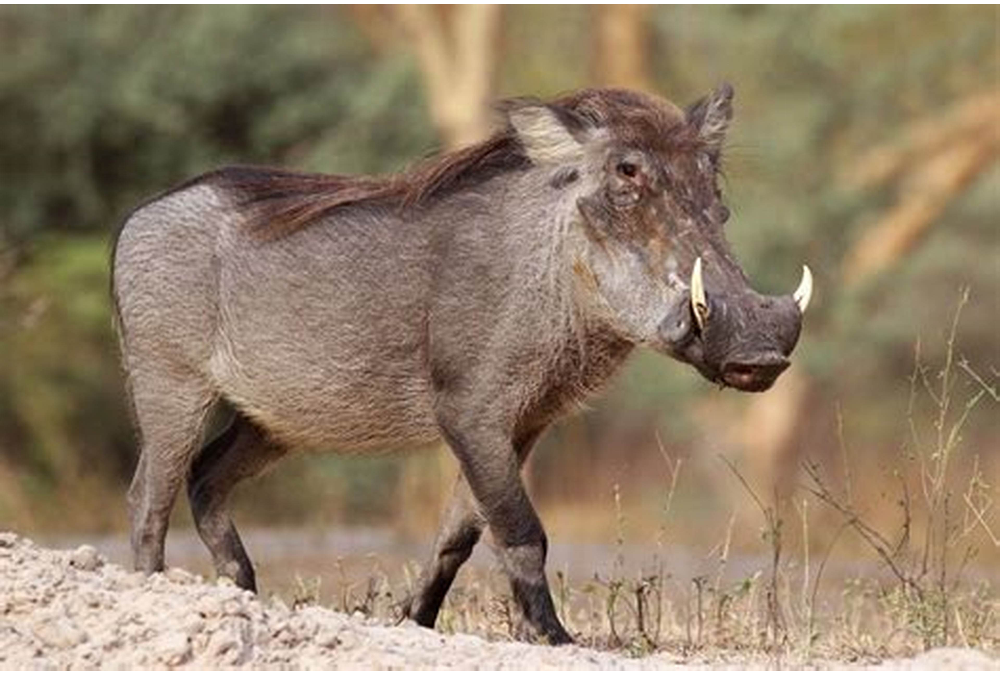

|
|
The deseart warthog is a member of the pig family.It has a large warty head,a coarse mane and two pair of tasks. unlike the common warthog,which can be found acrosss most of africa,the deseart warthog only lives in Kenya,Ethiopia and Somalia. It lives in savannah and shrublands habitats,where it feeds on grass and other vegetation and uses abandoned aardvark burrows as a place for shelter. The deseart warthog is listed by IUCN as aleast concern.However,the population faces several risks in kenya,including growing humans and livestock numbers This increases competiton for both water and food. |